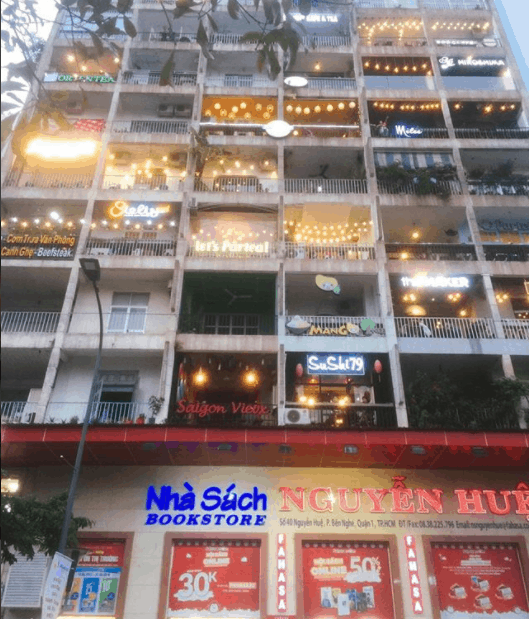
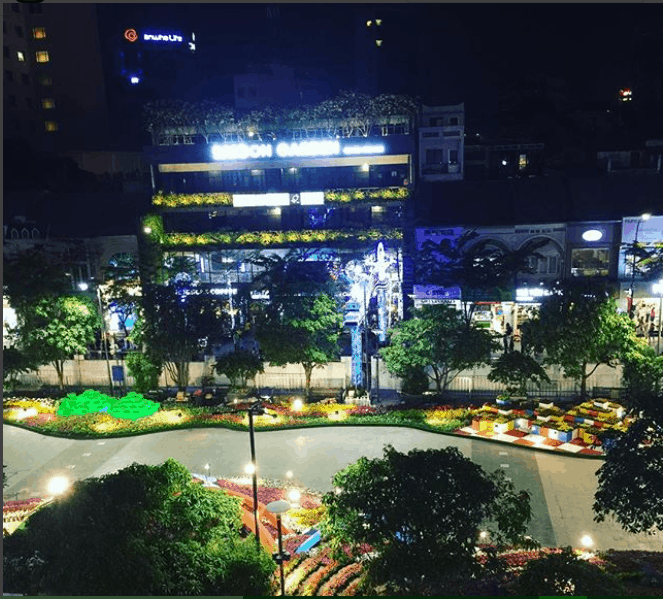

Phố đi bộ Nguyễn Huệ ở trung tâm Sài Gòn
Phố đi bộ Nguyễn Huệ – Điểm đến thú vị giữa lòng Sài Gòn Con phố đi bộ sôi động này nằm ở trên đường Nguyễn Huệ, thuộc địa bàn quận 1, thành phố Hồ Chí Minh, kéo dài từ trụ sở Ủy ban nhân dân thành phố đến Bến Bạch Đằng.
Các điểm gửi xe phố đi bộ
- Số 7-9 đường Lam Sơn (sau lưng Nhà hát TP)
- Vỉa hè Thi Sách – Đông Du
- Vỉa hè Thi Sách – Đông Du
- Vỉa hè Thi Sách – Lê Thánh Tôn
- Vỉa hè Tôn Đức Thắng – Nguyễn Hữu Cảnh
- Bãi giữ xe khách sạn Grand đường Đồng Khởi.
- Vỉa hè Hàm Nghi – công trường Quách Thị Trang
- Vỉa hè Hàm Nghi – Nam Kỳ Khởi Nghĩa
- Vỉa hè Hải Triều – Góc Kho bạc TP
- Nhà Văn hóa Thanh niên
- Tòa nhà Kumho số 39 Lê Duẩn
- Công xã Paris – Nguyễn Văn Bình
- Khách sạn Sofitel Plaza số 17 Lê Duẩn.
Phố đi bộ Nguyễn Huệ có gì hay?
1.Chụp ảnh tại phố đi bộ
Phố Nguyễn Huệ được nhiều người ví giống như một con phố ở nước ngoài nào đó, không dây điện, không rác, đường phố ngăn nắp với những làn kẻ dành riêng cho người đi bộ ở khắp nơi. Con đường dài được lát đá Granite sạch bóng cùng 2 đài phun nước, hệ thống cây xanh và hoa được bày trí sinh động. Vào buổi tối, ánh đèn ở đây cũng như ánh sáng từ các quán ăn, nhà hàng, quán cafe tỏa sáng lung linh tạo nên những khoảnh khắc đẹp. Vì thế, với những bạn nào đam mê chụp ảnh, thích có những bức ảnh thật lung linh thì chỉ cần ra đây là có đủ mọi bối cảnh cần thiết
2.Trượt Patin
Các khoảng sân rộng lớn là chỗ dành cho các xe 2 bánh chạy thông minh hay trượt patin sôi động, thu hút từ trẻ em cho đến giới trẻ.
3.Xem trình dẫn âm nhạc đường phố
Vào buổi tối, nhất là các ngày thứ 7 hoặc chủ nhật cuối tuần thì dọc từ đầu phố đến cuối phố đâu đâu cũng có nhóm các bạn trẻ, những người đam mê nghệ thuật tụ tập tại đây để giao lưu và biểu diễn. Các bạn sẽ bắt gặp những người nghệ sĩ đường phố đang trải mình vào buổi trình diễn.

Từ tiếng đàn bầu dân gian đến những bản guitar sâu lắng làm say lòng người đi bộ hay một màn hiphop chất lừ. Thỉnh thoảng, có những dịp lớn bạn sẽ thấy sân khấu được dàn dựng hoành tráng, dàn âm thanh, ánh sáng chuyên nghiệp tại đây và lượng người tăng gấp nhiều lần ngày thường.
Hoặc trải nghiệm đơn giản nhất mà bạn có thể thử đó là ngồi ngắm nhìn không khí sôi động đang diễn ra tại phố đi bộ. Lặng ngắm những đứa trẻ trong sáng nô đùa, những gia đình dắt con đi chơi, những cặp tình nhân đang nắm tay nhau tình tứ hay những nhóm bạn trẻ đang “check-in” tấm hình ưng ý nhất,… Đôi khi đó chính là những khoảnh khắc yên bình nhất trong cuộc sống.
5. Đi dạo dọc phố đi bộ Nguyễn Huệ
Không chỉ có con phố đi bộ chính náo nhiệt và sống động nhất. Bên cạnh đó, những con phố xung quanh cũng có rất nhiều ngóc ngách thú vị mà giới trẻ chắc chắn sẽ bị cuốn hút.
6. Nhà sách Nguyễn Huệ
Nằm ngay trên chính con phố đi bộ Nguyễn Huệ, địa điểm này thu hút nhiều khách du lịch yêu sách. Vừa có thể đi dạo vãn cảnh ngày cuối tuần, vừa được lạc vào thế giới sách yêu thích. Quả là một chuyến đi vừa tiện nghi, vừa bổ ích mà cực kỳ thoải mái.
7. Saigon Garden
Saigon Garden nằm ngay trên mặt tiền phố Nguyễn Huệ đằng trước phủ toàn cây xanh như một khu vườn hoàng gia nào đó.
Đây là khu tổ hợp các nhà hàng, quán cafe, shop thời gian, tiệm hoa, tiệm bánh,… sang trọng mà chất nhất Sài Gòn hiện nay. Ngồi nhâm nhi một tách trà, dưới không gian thoáng mát và sang trọng, ngắm hoạt động đang diễn ra tại phố đi bộ thì không có gì tuyệt bằng cho một ngày cuối tuần dịu dàng.